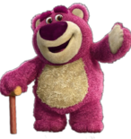

LOTSO

ROL EN PELÍCULAS:
Personaje ficticio antagonista de la película Toy Story 3 de Disney Pixar.
PERSONALIDAD:
Astuto, malo, cruel, bruto, egoísta y mentiroso
APARIENCIA:
Viejo oso de peluche de color rosa y blanco, con la nariz aterciopelada y que, además, huele a fresas.
EXPERIENCIA LABORAL:
Controlaba la guardería Sunnyside, utilizaba a los juguetes nuevos para ser ubicados en el salón "Orugas" de niños pequeños donde eran rápidamente estropeados.
DUEÑA ANTERIOR:
Daisy, una niña de 7 años que lo quería y llevaba a todas partes hasta que un día sin querer lo olvidó en el campo al quedarse dormida.